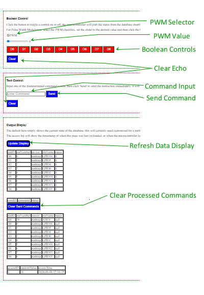

Description
The default user interface in the starter files is organized into three sections. Boolean Control is used to toggle the ON, OFF, and PWM states of the control pins on the microcontroller. Text Control is used to send String based commands to the microcontroller. Output Display is used to observe the current state of the database. See the image below for labeling referred to on this page.
This page will work for testing things, though for custom projects it is probably best used as a reference example for when and how to call the functions communicating with the database.
Operation
- Boolean Control
-
-
- PWM Selector
- Check this option to pass a PWM signal rather than a boolean On/Off value
- If a pin is selected which does not support PWM then a message to that effect will be echoed back from the script
-
- PWM Value
- Use this slider to select duty cycle level of the PWM assignment
- The starter files used 8-bit resolution even though ESP8266-12E NodeMCU can process 10-bit resolution (0-1023). Be aware there is a reliability trade off between PWM resolution and frequency it can be used at when customizing this value if devices will be toggled on and off approcahing max clock speed of the microcontroller.
-
- Boolean Controls
- Use these buttons to toggle the ON, OFF, or PWM state of the control pins on the ESP8266-12E NodeMCU
- The background color of the buttons will change to green, yellow, or red to indicate on, pwm, or off respectively
-
- Clear Echo
- Use this button to clear the messages returned afer operating the controls in this section
-
- Text Control
-
-
- Command Input
- Type in the text-based command to control the microcontroller here
- The command keywords need set up when programming the microcontroller for a particular project
-
- Send Command
- Click this button to send the text-based command to the database to be processed by the microcontroller
- To upgrade to voice commands send the output from IFTTT script into the JavaScript function called by this button, or pass it to the php script called by that function (textControl).
-
- Clear Echo
- Use this button to clear the messages returned after operating the controls in this section
-
- Output Display
-
-
- Refresh Data Display
- Click this button to retrieve the current state of the database
- The display does not refresh automatically in the starter files
-
- Clear Processed Commands
- Clicking this button will remove all commands from the database with a status of 'SENT' which indicates the microcontroller has already received them
- Commands with a status of 'HOLD' will remain in the database
-
Layout
